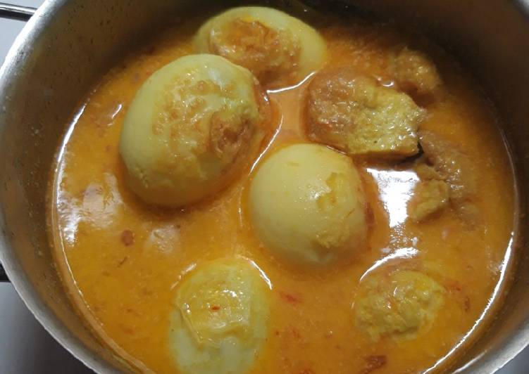

Opor Telor

The image above shows the indonesian dish Opor Telor. Eieren gemarineerd
in een saus gemaakt van ui, kruiden en kokosmelk.
Ingredienten
- 8 hardgekookte Eieren
- een zakje opor boemboe
- olie
- 2 gesnipperde uien
- 200ml Santan/kokosmelk
Bereiding
- Kook de eieren, laat ze schrikken, afkoelen en pel ze
- Snipper de fijn en bak deze in olie tot ze glazig zijn
- Bak de boemboe met de ui voor ong 2 min mee en blijf roeren
-
Voeg de Santan toe en roer tot deze een egale kleur heeft gekregen
- Snijd de eieren in 2 en leg deze in het kokosmengsel
Terug naar Homepage